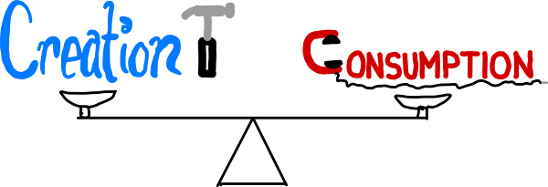
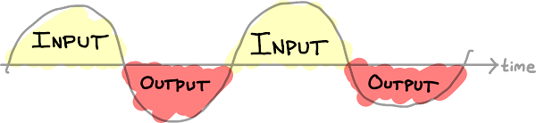
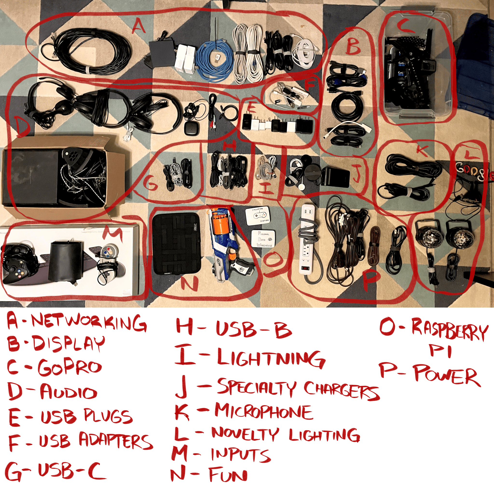
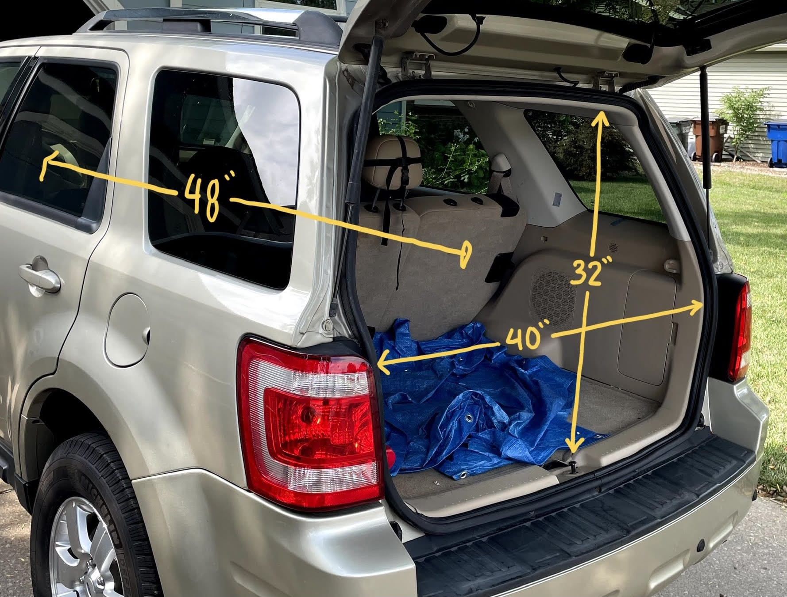

This Column is a love letter to things like itself. It’s indulgent, but hopefully you receive it well, without too much self-aggrandizement.
Full-Stack Project-Doer
‘Full-Stack’ is a coding term, referring to the entirety of an application. It comprises the front-end, the bits you see and interact with - and the back-end, the bits you don’t see that provide all the necessary structure and interactions with the self (or with other services). If you’re a “full-stack developer” it means you work on both the front end and back end. You’re both the Wizard of Oz and the man behind the curtain.
I’m applying that term more globally. Sort of like being a “Jack of All Trades”, but bound to the context of a specific project or product. I love it when I see something made by one person (or a small group) who’s filling tons of different roles. I love seeing the video made by the guy who figured out how to do some trick with epoxy to make some elaborate homemade nightstand featuring his own art. And if he sets it to music he wrote and performed? Oh man that’s good stuff.
I don’t want to become an expert at any one ‘slice’ of project-doing, to the detriment of the other necessary aspects1. I want to do the design, the engineering, the fabrication, the validation, apply the polish, and deliver the goods. I want the types of projects in which I endeavor to necessitate cross-domain skill. It is my goal and ambition to create new and varied things consistently for the foreseeable future2.
Creation/Consumption Balance

Consuming without creating inspires no self-fulfillment. Creating without consuming limits your exposure, thereby limiting what you can create. I think my ideal ratio is somewhere close to an even 1:1. An hour spent watching a show is to be matched with an hour spent, say, writing a Column about projects. If I spent too long in one mode without shifting to the other, I start to feel anxiety or malaise. My mindset ideally winds up looking like a sinusoid.

Meta Project Commentary
I’ve noticed a change in myself. I’ve spent more time working on fewer arrows. I’m less okay with a torrent of poorly-edited, half-hearted work. Instead I began aiming too produce on very carefuly edittted, lovingly crafting work. I’m not interested in how much I can produce. I’m interested in how good what I produce can be. I’m not sure when the switch happened - I assume gradually over many years.
Future Projects List
This is a snapshot, as of this writing, of the creative projects either immediately on my plate or on the horizon. I may or may not write in great depth about any of these in the future.
House Documentation
We recently moved. One thing I wished I had upon taking possession of the house was some sort of owners manual or general “house documentation” that included things like:
- Maintenance history, additions to the house, etc
- List of appliances, manufacturer info, model & serial numbers, install dates, warranty dates, receipts
- Location of water shutoff, map of circuit breakers, dryer vent location, and what the one switch on the wall that seems to do nothing is there for
- General list of quirks and anything else interesting
Turns out there are dozens of apps vying to be “the” app in this space. Frustratingly, though, they are all priced on a subscription model. It’s ludicrous to think I should pay you each year to maintain a database of my stuff that is stored on my phone or my iCloud.
So I’m building my own. Probably just using Notion.
Gillespie Graph
This one is by far and away the least well-defined, most ambitious, least likely to happen of these projects. Basically, I want to figure out a graph database of the world around me. Creating all of the entity types that exist in regular life and relationships between them. Imposing constraints on what can and cannot be. Then populating them into a an actual Graph database (e.g. Neo4J) documenting the world and how it works, ideally in an infinitely extensible way.
The world is a system. I want to model it.
Personal Data Warehouse (PDW)
This is my new vernacular for the “Life Tracker” (also formerly called the “Data Journal”). This works and has worked for the past ~7 years. I continue to have new things I want to do with it, though. In particular, I’m working to containerize this to make it more deployable to wherever and however I so choose in the future. Also in doing so establishing standards & interfaces that I can use to migrate data around. Defining how conflicts should work. Playing with new UX ideas. Also trying to remove dead code to do more with less.
Mobile Workshop
The fire that’s burning brightest right now. My new house has a smaller garage than my old house. I had a nice big work bench that was 12 feet long and stored a table saw underneath it. See #2 from the Top 5 below. I want to make my own version of that sort of a thing. Something that is built to suit my particular desires and constraints. See this Creation of the Week.
Office Setup
My previous home office was always just a desk in a bedroom. I never really did anything else with the room to make it an “office”. In much the same way that I want to build a Mobile Workshop to both house all my tools and use them - I want to make the office into my electronics workstation. I want a whiteboard, an ergonomic workstation with legit monitors and sound. And, rather than dump all my cables & cords into a drawer, I want to organize them. This is a start:

House projects
A non-exhaustive list of things that also fall under the umbrella of “home improvement3”:
- Upgrade pantry shelves, add lighting
- Install recessed lighting, office
- Instal recessed lighting, living room
- “Remaster” the bathroom
- Replace the vanity in the common bath
- Paint all walls
- Paint all trim
- Replace most light fixtures
Other Topics
A couple of other unrelated things I wanted to mention.
Notion on iPad
The Notion app on the iPad got better. If you use a mouse, you can now move multiple blocks at once (like on the browser). They re-built the toolbar that pops up when you’re editing blocks, and it’s been a bit more consistent. Notion remains “the app of the future” for my money. I can’t believe it’s not been cloned (or acquired) by Google/Microsoft/Apple at this point. Its versatility and usability make it not only capable of replacing all sorts of purpose-built applications, but often times better than the purpose-built app for my needs.
Photo and Markup for Projects
One of my favorite use-cases the iPad fills is the ability to quickly document measurements or ideas about a physical space in the context of that space. Here is a quick example of what I mean:

That was a picture I took for the Mobile Workshop project. It illustrates the constraints of a component of a system in the context those constraints come from. It helps ground those constraints and explain them to anyone else with whom I would collaborate. Plus it’s visual. I like visuals.
Age
I’m 33 now. Cool.
Moving
Moving is hard, yo. Home is where the heart is. My heart was always here.
Top 5: Projects by Others that Perfectly Represent What I’m Talking about Here
5. The many projects of Ben Uyeda
Ben Uyeda is self-branded as “the modern maker”. He’s not someone I expect many of you to have heard of, nor is he someone whose work I know well enough - but from what I’ve seen I’m very impressed with this guy. From building tables using concrete and Lego, to a solar-powered workshop, to building an entire house - his videos show high level of creativity and craftsmanship. Throw in a well-designed personal website, and hey… you got a full-stack project-doer.
4. I Like to Make Stuff
This entry is by far and away the newest on the list. I just found the ILTMS YouTube channel a couple days back. I’m very impressed with the breadth and consistency with which the dude creates. His airtag hiding video uses a laser cutter AND good old fashion leather work and stitching. And, like everyone else in this list, he also manages to make videos while making the things he makes.
3. The many projects of Mark Rober
Mark Rober, whom you may know as “the glitter bomb package guy” or as “the squirrel obstacle course” guy, is a well-known doer of massive, cross-discipline projects turned viral videos. He’s a coder, metalworker, woodworker, and presenter all rolled into one.
2. The “Amazing Compact Bench Build” by Jordan Frank
Jordan Frank used his tools to make his tools better. So meta. So great. He produced a great-looking final product, drew up plans & made this website to host his plans, AND documented the whole thing in this 4-Part YouTube Series, which he obviously had some fun with. This is full-stack work at its best. Video + web design + drafting + authoring + actual woodwork, and it was all done basically for fun?
1. Bo Burnham’s “Inside”
Bo Burnham’s COVID-era Netflix comedy(?) special “Inside” is a one-man, one-room show. He wrote the words, wrote the music, did the filming, costuming, set design, and editing of all of the above. It’s incredible, and both worth watching while being somewhat hard to watch. Bo Burnham sets an impossibly high bar.
Quote:
Hi I’m Bob and I like to make stuff. The start of every “I Like to Make Stuff” video.
Footnotes
-
It helps that I typically define the scope of my own projects. If the scope of a given project included “marketing”, I’d probably not want to do that bit. ↩
-
I don’t like to say “for the rest of my life” any more. I reserve the right to change my mind and interests. I have been around long enough to know the stuff I’m interested in right now is very likely ↩